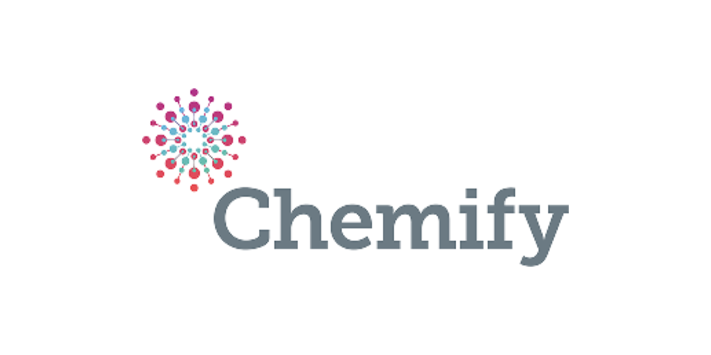
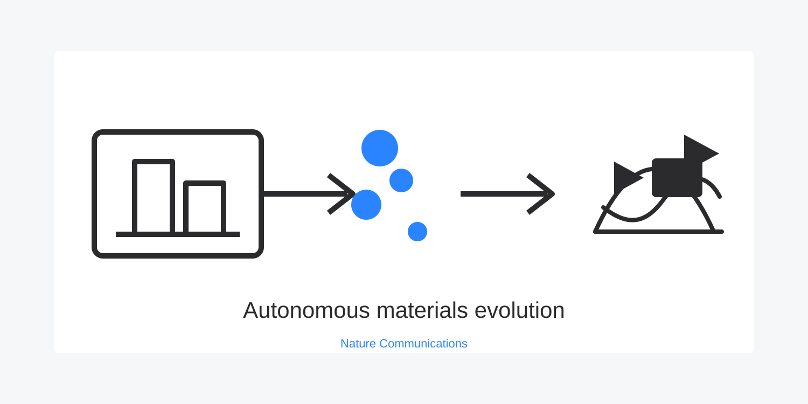
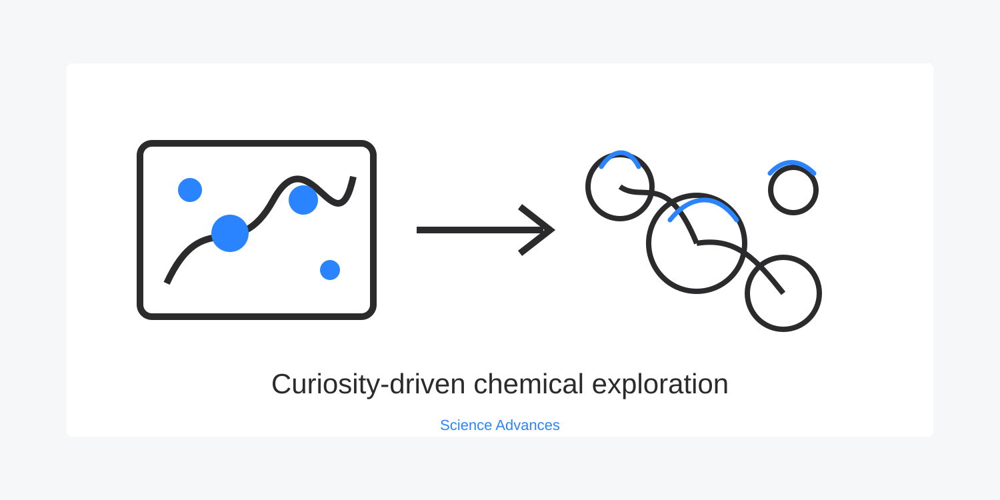
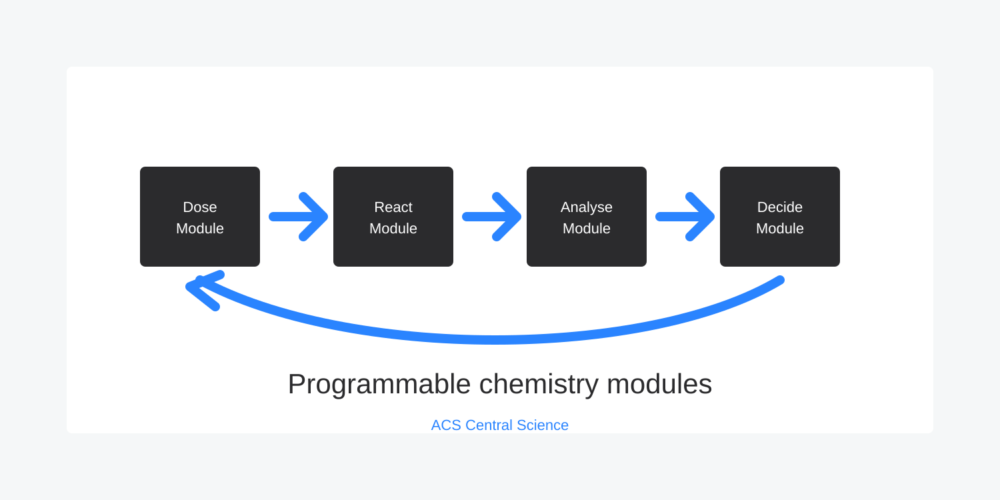

Entalpic
Working with Entalpic since before launch, we helped design their lab automation strategy and continue to consult weekly as they scale.
View project// Entalpic raised a €8.5M seed round
Working with Entalpic since before launch, we helped design their lab automation strategy and continue to consult weekly as they scale.
View project
Rapid throughput study delivered in under one month, with concrete recommendations projected to deliver a 5x increase by 2026.
View project
We supported automation strategy, robotics integration, and operational planning for next-generation AI-led chemistry workflows.
View project
A robotic platform evolved gold nanoparticles through algorithmic search, spectroscopic feedback, and physical seeding across generations.
View project
A target-free curiosity algorithm guided a chemical robot to explore self-propelling droplets and uncover unexpected behaviours.
View project
Low-cost chemistry robots coordinated experiments over a network, sharing results in real time to reduce duplicated search.
View project
Active-learning workflows compared human and robotic strategies for discovering and crystallizing gigantic inorganic clusters.
View project
Modular robotic hardware and software searched large inorganic reaction spaces to discover polyoxometalate clusters.
View project
Standard robotic modules for programmable chemistry, designed as practical building blocks for digital labs.
View project